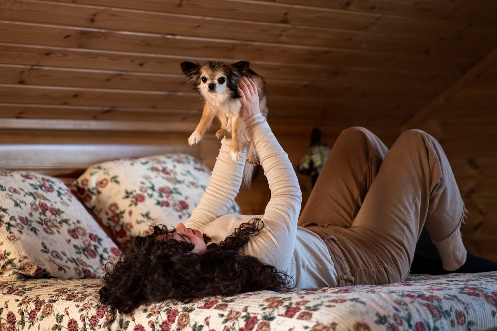
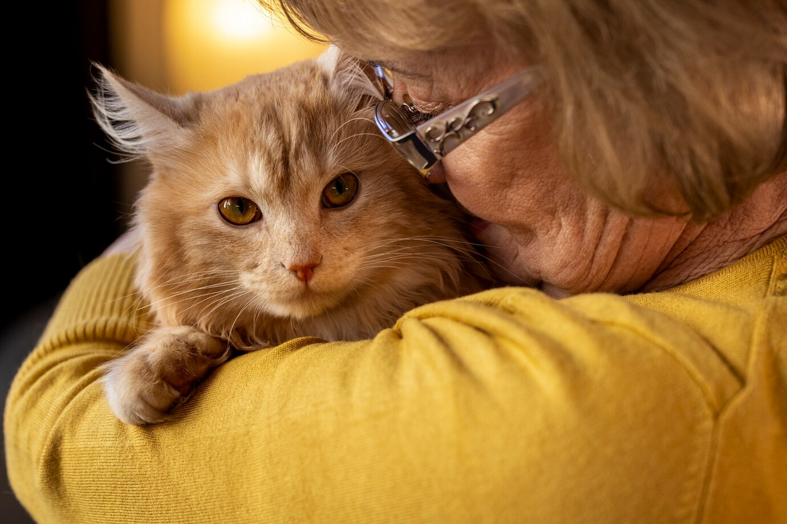
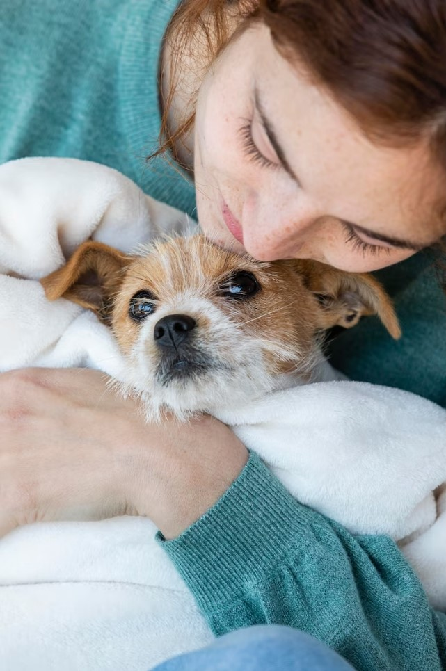
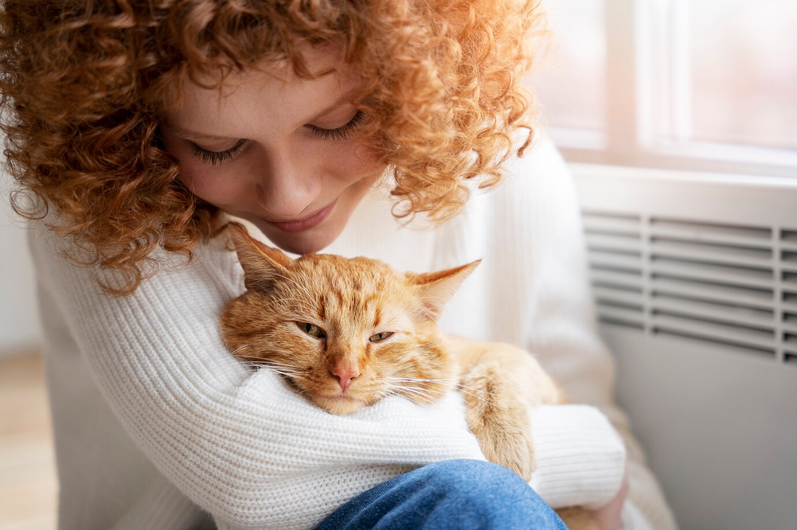
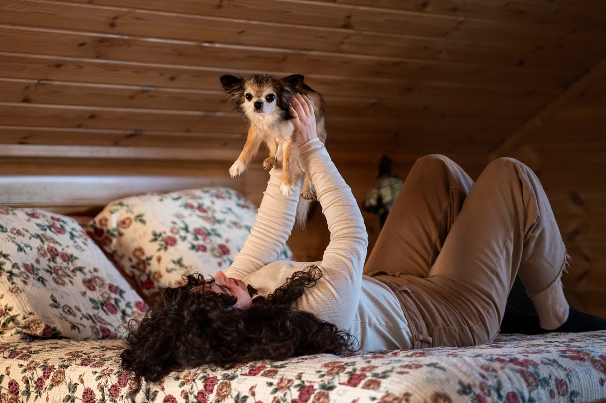
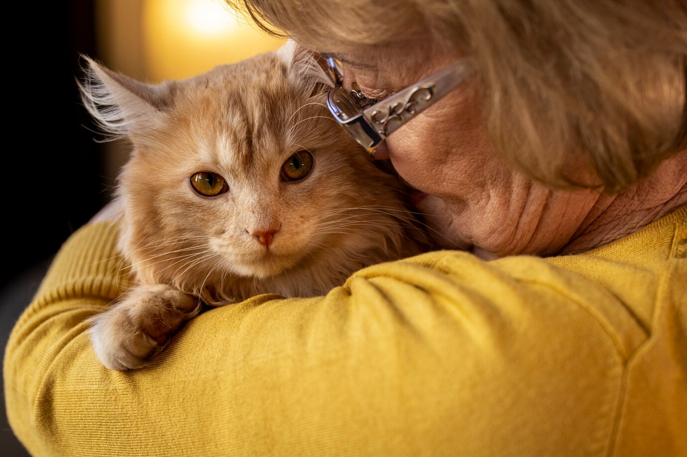
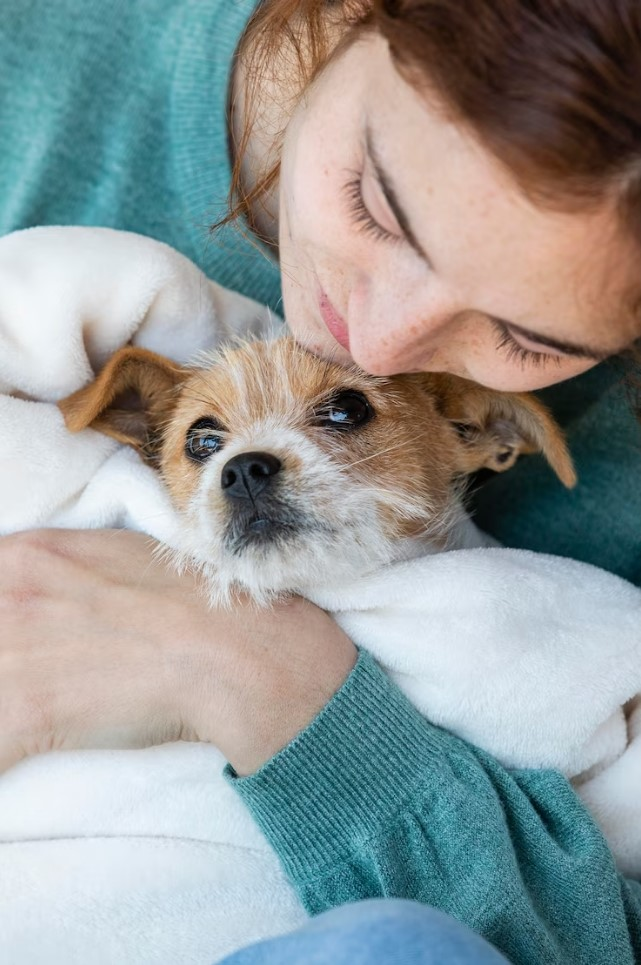
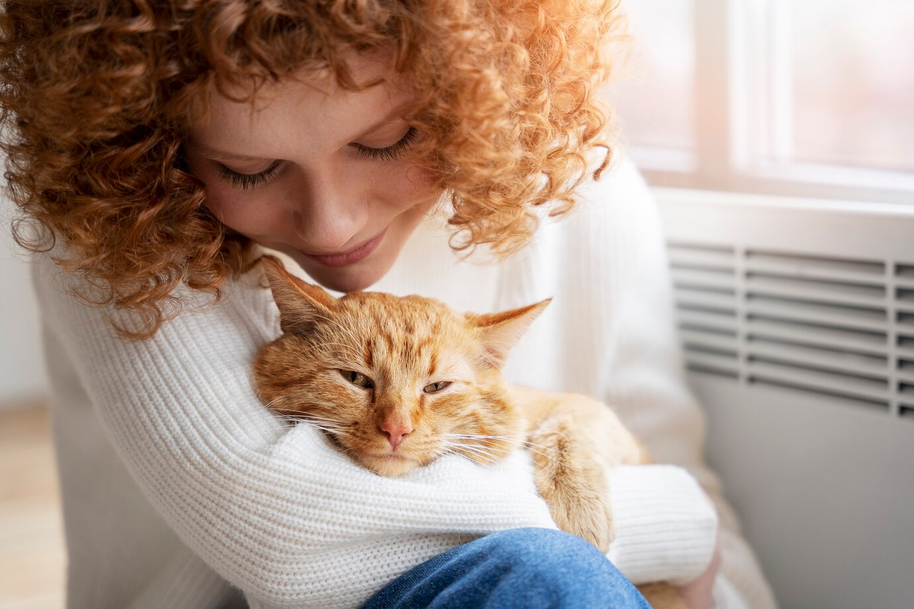

Misión:
En Huellitas de Amor, nuestra misión es brindar un refugio seguro y amoroso para mascotas abandonadas o maltratadas. Nos esforzamos por encontrar hogares amorosos que les den una segunda oportunidad en la vida.
¿Qué Buscamos?:
Buscamos familias amorosas y responsables que estén dispuestas a abrir sus corazones y hogares a una mascota necesitada. Creemos en la adopción responsable y nos esforzamos por encontrar el mejor partido entre mascota y familia.
Atención Veterinaria:
Nuestro equipo de profesionales veterinarios proporciona atención médica completa a cada mascota que llega a nuestras puertas. Desde exámenes de salud regulares hasta tratamientos especializados, aseguramos que cada animal reciba la atención que merece.
Nuestro Sueño:
Nuestro sueño es vivir en un mundo donde cada mascota sea amada, respetada y cuidada. Trabajamos incansablemente para hacer de este sueño una realidad, uniendo a mascotas necesitadas con familias amorosas y promoviendo la compasión hacia todos los seres vivos.
Requisitos para adoptar
El proceso de adopción es simple, pero necesita de disposición, interés y cuidado.
Estos son los requerimientos que todo adoptante debe considerar:
-
Entrevistas
Realizar entrevistas previas -
Ser mayor de 21 años -
DNI y servicio a nombre del adoptante constando domicilio -
Solo se da adopción en CABA -
No se entregan perros para terceras personas -
Todas las personas del hogar deben estar de acuerdo -
Se realiza firma de contrato de adopción y seguimiento
¿Cómo puedes ayudar?
Adopta: Si estás buscando un compañero peludo, ¡considera adoptar!
Explora nuestras opciones de donación en la sección "Donar".
Haz clic aquí para visitar nuestra página de donaciones.
 






